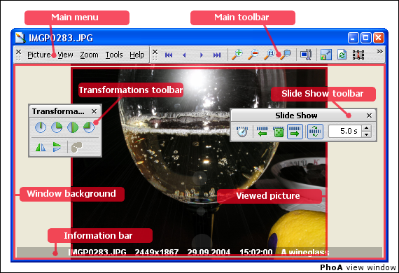

Dieser Modus gestattet Ihnen die Bilder einzeln anzusehen - in einem eigenen Fenster oder im Vollbildmodus. Zu diesem Zweck wird ja ein Fotoalbum angelegt.
Im Anzeigemodus ist folgendes moglich:
Diese Funktionen sind auch uber Schaltflachen auf der Symbolleiste, uber das Kontextmenu, das durch Drucken der rechten Maustaste im Fenster erscheint, oder uber Tastatur- und Mausbefehle zuganglich.
{[%hh_seealso_de]}
Arbeiten im Anzeigemodus
Optionen :: Anzeigemodus
Browser Modus
{[%hh_ftr_de]}